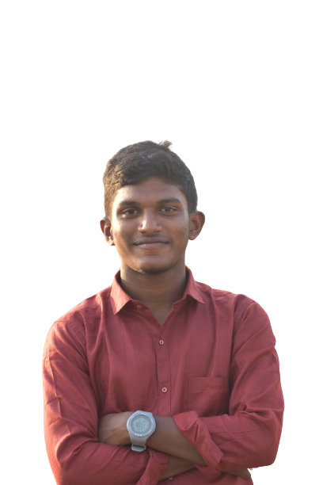
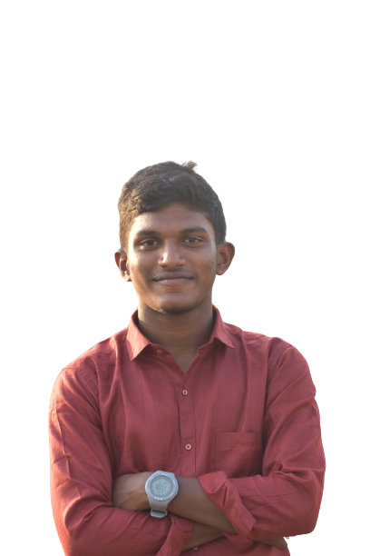
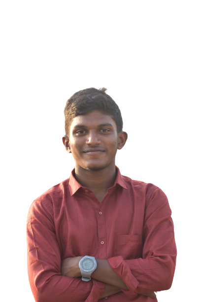

I,m Uday Kumar Konanki
This is my official portfplio website to showes all
Details and eork exiprind we development
 

This is my official portfplio website to showes all
Details and eork exiprind we development

Hello! My name is Uday Kumar Konanki, and I'm currently in my third year of pursuing
a Bachelor of Technology (B.Tech) degree. At the age of 20, I'm passionate about technology
and creativity. Currently, I'm working on an exciting project, creating a website
dedicated to photography and travel.
I'm studying at Malineni Perumallu Educational Society, where I'm gaining
valuable knowledge and skills that are helping me excel in my web development journey.
My main tools for building this website are CSS and HTML, as I believe they provide a solid
foundation for creating visually appealing and functional web pages.
Through this project, I hope to showcase my love for photography and travel
while also honing my web development skills. It's an exciting journey, and
I'm looking forward to sharing my work with the world. Stay tuned for updates on my website project!